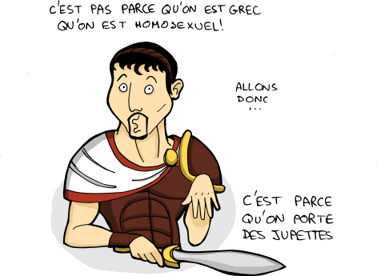
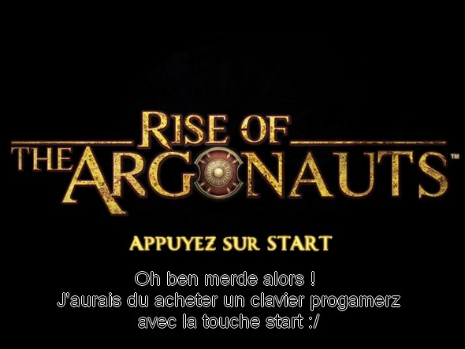
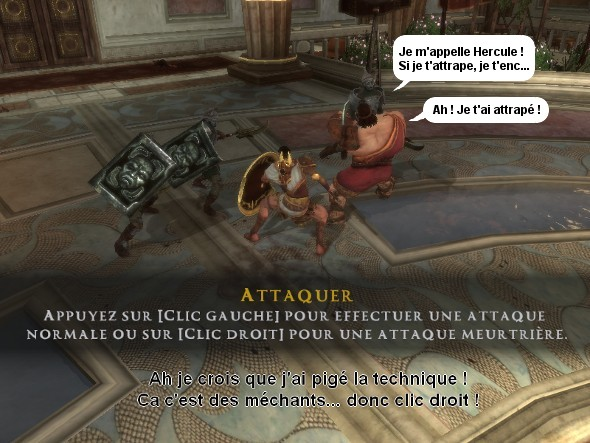

Ce week end se déroulait l'annuelle IRL des blogueurs BD à Montpellier. C'est à dire une rencontre dans la vrai vie quoi. C'était über bien.

Alors y avait, par ordre analphabétique :
- Ruxhart - en vrai il est hyper roux, allez l'insulter.
- Wruth - il a pas mis son blog à jour depuis 1 mois, allez l'insulter.
- Aly - la radio de son blog se lance toute seule, allez l'insulter.
- Lychen - il a rendu tout le monde fou avec ses tests alors qu'en fait il suffisait de venir a l'IRL pour avoir une dédicace, allez l'insulter.
- Sway - les pages de son blog font 5km de long, allez l'insulter.
- Lu-Ne - j'ai pas eu de dédicace d'elle :(, allez l'insulter.
- Calimero - il ressemble vachement à ses dessins en vrai, allez l'insulter.
- Mariko - est parti super tôt, allez l'insulter.
- Sei - n'a pas de flux rss sur son blog, allez l'insulter.
- Lutine - fais des 'L' majuscules bizarre dans ses signatures, allez l'insulter.
- Baby Carott - j'commence à être a court d'arguments là... mais allez l'insulter quand même.
Je sais que j'en oublie mais j'ai pas trouvé les blogs de tout le monde (et pas retenu tous les noms d'ailleurs). Faites-moi signe et je vous ajouterai dans la liste. Bon ok, ça vous apportera pas un grand prestige, mais quand même :D
Et enfin, les dédicaces "avec un doigt dans le nez" que j'ai reçues :
Si vous aussi vous voulez savoir à quoi vous ressembleriez si vous étiez un homme préhistorique, visitez ce site :D
Le nom du film c'est "A la croisée des chemins" si je ne me trompe pas. Je vous tiendrai au courant quand il sera nominé aux oscars.
En attendant d'avoir de vrai images, voilà un petit aperçu de ce que ça donnera de me voir déguisé :
Cette note vient inaugurer la catégorie "Jeux vidéo" du blog, qui contiendra des tests vite faits mal faits des jeux vidéos auxquels je joue. Avec au menu, des dessins bien sûr (même si pour le premier article, le dessin est pas très gros :D), une description rapide du jeu et ce que j'en pense. Les jeux sont à peu près choisis au hasard. Si la boîte me plaît quoi.
Aujourd'hui, comme le titre l'indique, ce sera : Rise of the Argonauts !

C'est pas non plus parce que le développeur s'appelle Codemaster que leurs jeux sont bien codés.
Ce jeu raconte l'histoire de Jason et de la toison d'or. Bon, évidemment, l'histoire originale n'est pas vraiment respectée : Achille et Dédale s'invitent dans l'aventure en plus d'Hercule, et la toison d'or ne permettra pas à Jason de récupérer son trône mais de rendre la vie à sa femme qui met des tenues très légères. Mais après tout, c'est difficile de mettre un vrai scénario dans un jeu vidéo... Ahem.
Un portage depuis la console réussi
Le jeu est aussi sorti sur PS3 et Xbox 360, et le moins qu'on puisse dire, c'est qu'il ont pensé a garder le même esprit, le même feeling, les même détails entre les différentes versions.


Par contre, la seule option graphique du jeu, c'est la possibilité de changer la résolution. Si jamais le jeu rame sur votre ordi, comme on dit, c'est : "dans l'cul Lulu" !
De même, dans le menu des commandes, vous avez le choix entre "style 1", "style 2" et "style 3", comme sur la nintendo 64 ! Impossible de modifier la fonction d'une touche particulière. Je sais pas vous, mais moi, sur un jeu PC, c'est la première fois que je vois ça.
Le menu des sorts est sympathique aussi, mais il conviendrait mieux à une manette de PS3 :
Chaque dieux propose ses propres sorts. Pour passer d'un dieu à l'autre dans le menu des sorts il faut utiliser les touches Q et E. Pourquoi Q et E et pas plutôt Q et D ? Il faut croire les gens qui ont fait les changements entre claviers qwerty et azerty sont un peu dyslexiques. Ou un peu cons.
Encore mieux, dans le menu pour charger une partie, on a le curseur mais il ne sert à rien : il faut utiliser les touches fléchées. Ca, j'ai mis un moment pour comprendre. C'est quasiment le seul endroit du jeu où on utilise ces touches d'ailleurs.
Un jeu tout en finesse

Ha ! Un ennemi ! Clic droit, clic droit, clic droit, clic droit. Je l'ai bien niké !
Ha ! Un ennemi avec un bouclier ! Je dois trouver un moyen de l'atteindre malgré ses parades. Clic droit, clic droit, clic droit, clic droit. Pas très solides les boucliers de l'époque.
Ha ! Un boss ! Clic droit, clic droit, clic droit, clic droit.
Meeeeerde, il est déjà mort.
J'ai même pas eu le temps de tester le combo alt+clic, shift+left, ctrl+alt+suppr :(

Une durée de vie illimitée
D'environ 10 heures. Si on est pas autiste. Pas de multijoueur, pas de bonus, pas de fin alternative ou autre fantaisies. Que du pur.
~~~~~~ En conclusion ~~~~~~
Si vous êtes étudiant, que la fac est bloquée depuis 3 semaines et que vous vous ennuyez au point de regarder TF1, vous pouvez jouer à ce jeu. Et encore, à condition de le télécharger sur un de ces sites de terroristes qu'on appelle "tracker bitorrent". Vendre ce jeu sur PC c'est criminel. Le vendre sur console, ça va. Les joueurs sur console c'est tous des cons (haha le troll).
Le prochain jeu testé sera Mirror's Edge, et y aura beaucoup plus de dessin.
Ce beau dessin est tiré du blog Geekscottes, qui est en grève pour protester contre la mort d'Internet.
Hé oui, désolé, pas de dessin de moi ce soir finalement. On m'a refilé pleeeeein de boulot. Je dois dessiner pour faire des tracts qui seront distribués à la fac. Pour râler contre la LRU et tout ça...
Et une phrase magnifique que je viens d'entendre dans "Esprits criminels" sur TF1 (oui c'est mal) :
"Whoa il est trop mortel votre matériel ! C'est un noyau linux, le code source est modifiable ! Enfin j'veux dire... c'est pas dans les bureaux du gouvernement qu'on trouve ce genre de choses d'habitude... A part en Suisse."
Ils doivent être vraiment pauvres en Suisse pour utiliser un truc gratuit si on en croit cette série :D
Du niou bientôt, promis.


{kind=link}
{kind=link}
{kind=link}
{kind=link}
{kind=link}
{kind=link}
{kind=link}